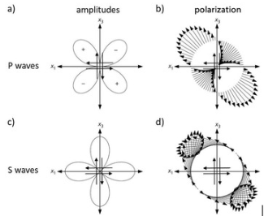
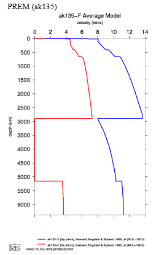

1. Seismic Moment Tensor
A moment tensor is a 3×3 matrix that describes the internal forces and deformation associated with an earthquake source. It generalizes the concept of a force couple, capturing different types of fault motion such as:
- Strike-slip – horizontal shearing motion
- Normal – downward motion of hanging wall
- Reverse – upward motion of hanging wall
These motions are described using three geometric angles:
- Strike (ϕ): The angle between the fault trace and north.
- Dip (δ): The angle between the fault plane and horizontal surface.
- Rake (λ): The direction of slip along the fault plane.
The scalar seismic moment M₀ is a measure of earthquake size, calculated from moment magnitude Mw as:
M₀ = 10^(1.5 × Mw + 9.1)Units: Newton-meters (Nm)
Azimuth Angle (θ)
The azimuth angle in seismology is the angle measured clockwise from geographic North to the direction pointing from the earthquake source (hypocenter) to the seismic station (receiver), expressed in degrees.
- 0° → North
- 90° → East
- 180° → South
- 270° → West
Azimuth plays a critical role in waveform synthesis because seismic wave radiation patterns vary with direction. For example:
In moment tensor-based simulation, azimuth enters the equations via
terms like cos(ϕ), sin(ϕ),
cos(2ϕ), and sin(2ϕ) — shaping the
contribution of each Green's function.
2. Moment Tensor Components
Moment tensor : A double couple (constrained) that represents the shear faulting is represented by only 4 independent parameters (strike, dip, rake, Mw) Alternatively, a full moment tensor that also explains the tensile nature represented all 6 independent parameters (Mij).
The moment tensor contains six independent components due to symmetry. These are named based on their directional contributions:
- Mrr: Radial-Radial (vertical compression or tension).
- Mtt: Transverse-Transverse (horizontal shear parallel to strike).
- Mpp: Perpendicular-Perpendicular (horizontal tension perpendicular to fault).
- Mrp: Radial-Perpendicular (dip-slip motion)
- Mtp: Transverse-Perpendicular (strike-slip motion).
- Mrt: Radial-Transverse (shear in vertical plane)
These are computed from strike, dip, rake, and seismic moment using:
Mrr = -M₀ [sin(δ)cos(λ)sin(2ϕ) + sin(2δ)sin(λ)sin²(ϕ)]
Mtt = M₀ [sin(δ)cos(λ)sin(2ϕ) - sin(2δ)sin(λ)cos²(ϕ)]
Mpp = M₀ sin(2δ) sin(λ)
Mrp = -M₀ [cos(δ)cos(λ)cos(ϕ) + cos(2δ)sin(λ)sin(ϕ)]
Mtp = -M₀ [cos(δ)cos(λ)sin(ϕ) - cos(2δ)sin(λ)cos(ϕ)]
Mrt = -M₀ [sin(δ)cos(λ)cos(2ϕ) + ½ sin(2δ)sin(λ)sin(2ϕ)]
3. Radiation Pattern
The radiation pattern of an earthquake describes how seismic wave energy is distributed in different directions from the earthquake source. It depends on the orientation, slip direction of the fault. The seismic energy propagates as P-waves (compressional) and S-waves (shear). For a double-couple source (typical shear faulting), the radiation pattern of P and S wave radiation patterns shows distinct lobes: P-waves show a four-lobed pattern and S-waves show a quadrupole pattern (Fig 1).
At certain angles, the amplitude of waves may be zero, known as nodal planes.
4. Velocity Model (ak135)
In seismology, a velocity model represents how the velocities of seismic waves change with depth and location inside the Earth. It is a fundamental tool used to understand and simulate the propagation of seismic waves through the Earth's interior. Typically, the model includes information about P-wave and S-wave velocities, density, and attenuation variations as a function of depth and geographic position. Velocity models are classified as 1D, 2D, or 3D, based on how seismic velocity varies: only with depth in 1D (e.g., ak135 (fig 2), PREM), with depth and horizontal distance in 2D, and in all spatial directions in 3D.
5. Green’s Functions
Green’s functions represent the Earth’s impulse
response to a unit source. When convolved with a moment tensor, they
produce synthetic seismograms. These are precomputed for specific
Earth models (e.g., ak135).
They differ by wave type and direction:
- ZSS: Vertical response to strike-slip source
- ZDD: Vertical response to dip-slip (double-couple) source
- ZEP: Vertical response to explosive (isotropic) source
- ZDS: Vertical response to dip-strike interaction
- RSS: Radial response to strike-slip
- RDD: Radial response to dip-slip
- REP: Radial response to explosion
- RDS: Radial response to dip-strike interaction
- TSS: Transverse response to strike-slip
- TDS: Transverse response to dip-strike
Each Green’s function component correlates with a particular motion pattern or source type. They form the building blocks for seismic waveforms.
6. Waveform Synthesis via Convolution
The final waveform is a sum of weighted Green’s functions using moment tensor components:
u(t) = Σ Mi · Gi(t)- u(t): Output waveform for a given time t
- Mi: Moment tensor component (e.g., Mrr, Mrp)
- Gi(t): Green’s function associated with that component.
Trigonometric terms like cos(2ϕ),
sin(ϕ) encode the azimuthal dependence of each
component.
Synthetic Waveform Equations
Vertical (Z):
Z(t) = Mtt·[½·ZSS·cos(2ϕ) - ZDD/6 + ZEP/3] +
Mpp·[-½·ZSS·cos(2ϕ) - ZDD/6 + ZEP/3] +
Mrr·[ZDD/3 + ZEP/3] +
Mtp·ZSS·sin(2ϕ) +
Mrt·ZDS·cos(ϕ) +
Mrp·ZDS·sin(ϕ)
Radial (R):
R(t) = Mtt·[½·RSS·cos(2ϕ) - RDD/6 + REP/3] +
Mpp·[-½·RSS·cos(2ϕ) - RDD/6 + REP/3] +
Mrr·[RDD/3 + REP/3] +
Mtp·RSS·sin(2ϕ) +
Mrt·RDS·cos(ϕ) +
Mrp·RDS·sin(ϕ)
Transverse (T):
T(t) = Mtt·[½·TSS·sin(2ϕ)] -
Mpp·[½·TSS·sin(2ϕ)] -
Mtp·TSS·cos(2ϕ) +
Mrt·TDS·sin(ϕ) -
Mrp·TDS·cos(ϕ)
These equations show how each tensor component influences different wavefield directions (Z, R, T), using corresponding Green’s function types.
7. 3D Visualization
A 3D visualization assists in understanding the spatial relationships:
- Crust volume: Rectangular prism representing Earth’s outer shell.
- Source: Red sphere showing hypocenter (depth & location).
- Receiver: Blue cone showing surface seismometer at desired azimuth.
- Azimuth arc: Curved line from North to receiver location.
- Seismic rays: Visual lines indicating wave travel paths.
By rotating and adjusting the azimuth, student can intuitively see how different fault orientations and receiver angles influence seismic observations.